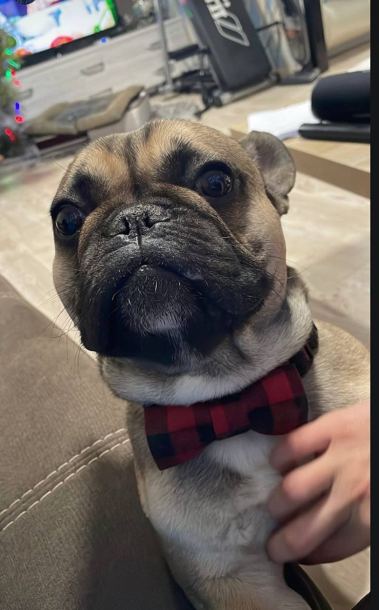

Класифікація собак базується на їхній системі біологічної класифікації, враховуючи їхні родину, вид і породу. Собаки (Canis lupus familiaris) належать до класу Мамалії (Mammalia), ряду Хижі (Carnivora) і родини Псові (Canidae). За породами собак існує безліч видів і різновидів, кожен з яких має свої унікальні риси та характеристики.
Один із представників цієї родини - французький бульдог (French Bulldog), що належить до породи бульдогів. Французькі бульдоги мають короткий, масивний тулуб, округлу голову з характерними складками на морді та короткими носами. Вони відрізняються також великими, виразними очима і короткими вушками, що стоять вертикально. Ці собаки мають коротку шерсть і неперевершений характер. Французький бульдог вважається дружнім та спокійним песиком, який добре впорається з дітьми і іншими домашніми тваринами. Ця порода стала дуже популярною завдяки своєму чарівному вигляду та вірному характеру.
Щодо класифікації французького бульдога більш детально, він належить до підродини Caninae, яка включає в себе всіх сучасних собак. Порода бульдогів (Bulldog) включає різні підвиди, а французький бульдог, або French Bulldog, є однією з них. Виділений з інших бульдогів завдяки своєму специфічному вигляду і характеру, французькі бульдоги здобули популярність як прекрасні сімейні собаки і чудові компаньйони, відзначаючись своєю дружністю та неперевершеним характером.
